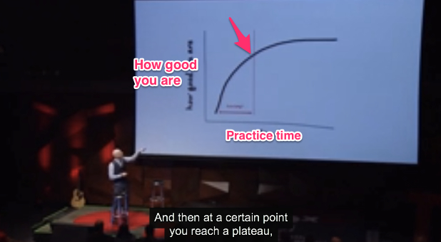

Belajar keahlian apapun dalam 20 jam
Bagaimana pendapat anda kalau suatu hari seseorang mengklaim bahwa ia bisa menguasai keahlian apapun dalam 20 jam! Wow... Are you serious? Tapi orang itu tidak sedang bergurau, dan orang itu adalah Josh Kaufman, seorang pengarang buku bestseller internasional. Dalam buku-bukunya ia banyak membahas tentang bagaimana menguasai ilmu dan ketrampilan apapun dalam waktu singkat.
Dalam presentasinya di TEDx Talk, Josh mulai dengan menceritakan pengalamannya sebagai orang tua yang baru dianugerahi anak pertama. Saat itu ia dan istrinya menjadi sangat sibuk sehingga, jangankan belajar tentang suatu keahlian baru, bahkan tugas-tugas yang ada pun banyak yang terbengkalai.
Awalnya ia merasa putus asa dan berpikir bahwa ia tak akan pernah bisa mendapat waktu luang lagi untuk belajar hal-hal baru. Tapi akhirnya John menemukan bahwa untuk mencapai tingkat keahlian tertentu ternyata tidak dibutuhkan waktu yang lama, asal memiliki motivasi yang besar, melakukannya dengan tekun dan dengan cara yang jitu.
Sebuah riset menunjukkan bahwa dibutuhkan 10.000 jam bagi seseorang untuk menjadi ahli (expert) dalam suatu keahlian tertentu. Tapi, mungkin menjadi seorang ahli bukan tujuan kita. Contohnya, kebanyakan dari kita mungkin hanya ingin bisa main gitar untuk hiburan, dan tidak betul-betul ingin menjadi seorang ahli gitar.

Dalam gambar di atas, Josh sedang menjelaskan tentang kurva belajar (learning curve). Jika dicermati, kurva belajar setiap orang biasanya seperti ini: cepat pada bagian awal, mencapai titik tertentu pada waktu tertentu dan kemudian melambat sampai mencapai titik expert. Nah, disini menarik! Josh berpendapat, seandainya percepatan pada bagian awal kurva belajar tersebut bisa dimaksimalkan, semua orang dapat mencapai tingkat penguasaan yang cukup tinggi pada keahlian apapun dalam waktu singkat.
Ok, jika kurva belajar dimaksimalkan, berapa lama waktu minimum yang dibutuhkan? Dalam penelitiannya, Josh tiba pada kesimpulan bahwa, kita bisa belajar keahlian apapun dalam tempo 20 jam! Ini setara dengan waktu kurang dari 45 menit/hari dalam sebulan. Menarik bukan?
Dan, seperti saya katakan tadi, orang ini tidak sedang bergurau. Josh membuktikan di atas panggung TEDx, menyanyikan sebuah lagu (tepatnya mashed-up dari beberapa lagu) sambil memainkan ukulele. Ia mengklaim, bahwa alat musik tersebut dipelajarinya hanya dalam waktu 20 jam!
Pada akhir presentasinya, Josh memberikan beberapa langkah praktis untuk mulai belajar apapun dalam waktu singkat:
Deconstruct skills.
Apa maksudnya? Mari kembali ke contoh kita tadi: bermain gitar. Anda bisa membeli sebuah buku teks yang mengulas lengkap cara bermain gitar yang baik dan benar. Tapi biasanya seluruh pelajaran bisa dibagi-bagi menjadi unit-unit kecil yang sederhana dan lebih mudah dipelajari. Dari sini kita bisa memilih mana yang lebih penting dan bisa dipelajari dalam waktu sesingkat mungkin.Learn enough to self-correct.
Musuh dalam selimut adalah procrastination atau menunda-nunda. Untuk menguasai keahlian tertentu, kita biasanya mengumpulkan resource belajar (contoh: buku, DVD, materi2 dari internet dll.). Namun jika kita berpikir bahwa semuanya harus tersedia dulu secara lengkap baru kita bisa belajar, itu adalah procrastination! Kata Josh, belajarlah sedikit-demi-sedikit, dengan resource yang tersedia, yang memungkinkan kita menilai sendiri kemajuan anda (self-correction).Remove practice barriers.
Disini Josh bicara semua hal yang mengalihkan perhatian kita dari tujuan belajar yang hendak dicapai, misalnya: televisi, internet dll. Meminimalkan distraction seperti itu, akan memaksimalkan efektifitas belajar kita, baik dalam hal penguasaan maupun waktu yang dibutuhkan.Practice at least 20 hours
Komitmen waktu adalah penting! Seandainya kita bisa berkomitmen untuk menyisihkan 20 jam saja, atau kira-kira 45 menit setiap hari, maka dalam sebulan kita bisa menguasai keahlian apapun.
Jadi, ulasan di atas dapat disimpulkan dalam beberapa poin: sederhanakan dan pilah mana yang paling penting, jangan menunda dan pelajari sedikit demi sedikit, enyahkan pengalih perhatian, miliki komitmen waktu. Maka anda dapat menguasai apapun dalam 20 jam saja.
Video and screenshot from Youtube